Project 2
Fun with Filters and Frequencies
Convolutions from Scratch
Four-loop convolution
def four_convolve(self, image, kernel):
kernel = kernel[::-1, ::-1]
y_pad = kernel.shape[0] // 2
x_pad = kernel.shape[1] // 2
image = np.hstack((np.zeros((image.shape[0], x_pad)), image, np.zeros((image.shape[0], x_pad))))
image = np.vstack((np.zeros((y_pad, image.shape[1])), image, np.zeros((y_pad, image.shape[1]))))
convolved_image = np.zeros(image.shape)
for y in range(y_pad, image.shape[0] - y_pad):
for x in range(x_pad, image.shape[1] - x_pad):
new_value = 0
for i in range(-y_pad, y_pad + 1):
for j in range(-x_pad, x_pad + 1):
new_value += image[y + i, x + j] * kernel[i + y_pad, j + x_pad]
convolved_image[y, x] = new_value
return convolved_image[y_pad:image.shape[0] - y_pad, x_pad:image.shape[1] - x_pad]Two-loop convolution
def two_convolve(self, image, kernel):
kernel = kernel[::-1, ::-1]
flattened_kernel = kernel.reshape((kernel.shape[0] * kernel.shape[1]))
y_pad = kernel.shape[0] // 2
x_pad = kernel.shape[1] // 2
image = np.hstack((np.zeros((image.shape[0], x_pad)), image, np.zeros((image.shape[0], x_pad))))
image = np.vstack((np.zeros((y_pad, image.shape[1])), image, np.zeros((y_pad, image.shape[1]))))
convolved_image = np.zeros(image.shape)
for y in range(y_pad, image.shape[0] - y_pad):
for x in range(x_pad, image.shape[1] - x_pad):
new_value = 0
extracted_image = image[y - y_pad : y + y_pad + 1, x - x_pad: x + x_pad + 1]
extracted_image = extracted_image.reshape((extracted_image.shape[0] * extracted_image.shape[1]))
new_value = np.dot(extracted_image, flattened_kernel)
convolved_image[y, x] = new_value
return convolved_image[y_pad:image.shape[0] - y_pad, x_pad:image.shape[1] - x_pad]Filters and scipy comparison
d_x = np.array([[1, 0, -1]])
d_y = np.array([[1], [0], [-1]])
box_filter = np.ones((9, 9)) / 81
box_filter_custom = convolutions.four_convolve(convolutions.gray_image, box_filter)
box_filter_scipy = signal.convolve2d(convolutions.gray_image, box_filter, mode='same')Input: grayscale selfie
Finite difference Dx
Custom (numpy)
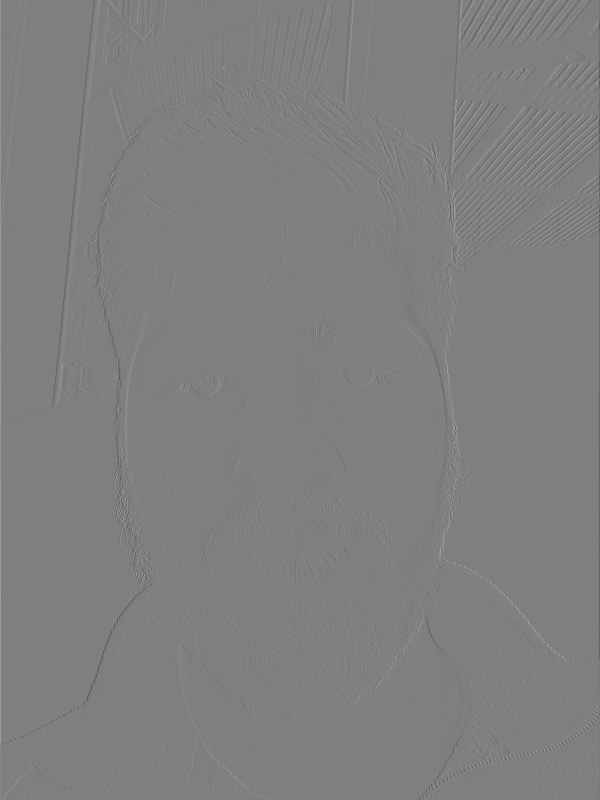
scipy.signal.convolve2d
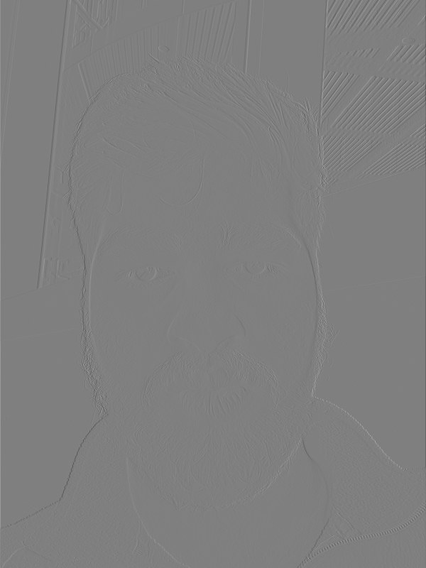
Finite difference Dy
Custom (numpy)
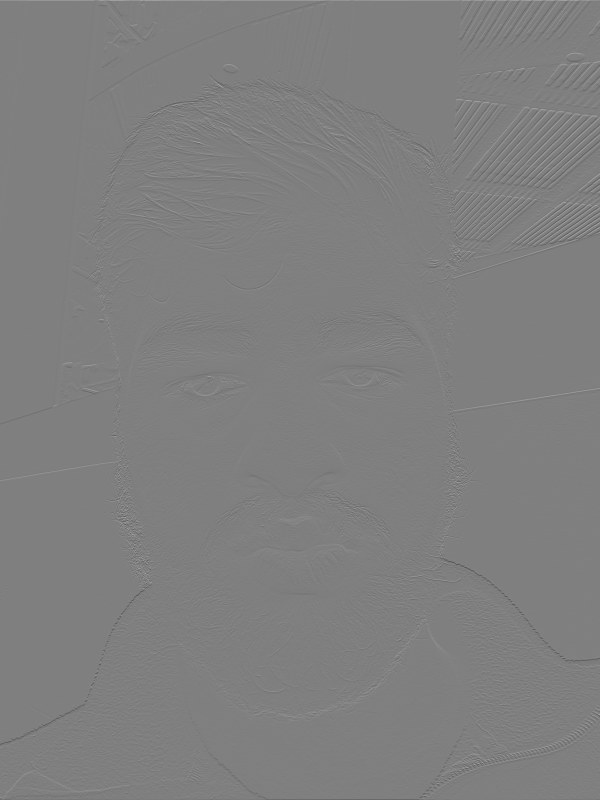
scipy.signal.convolve2d
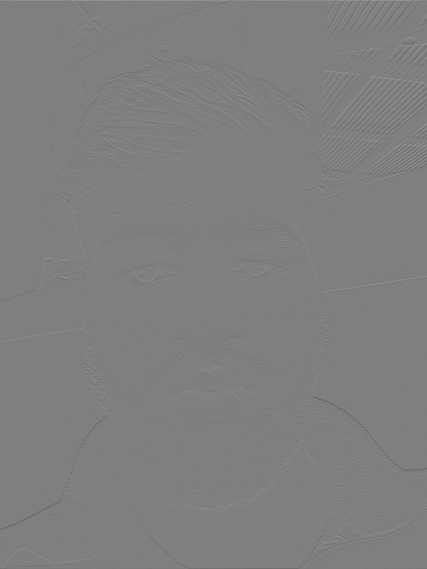
Gradient magnitude
Custom (numpy)
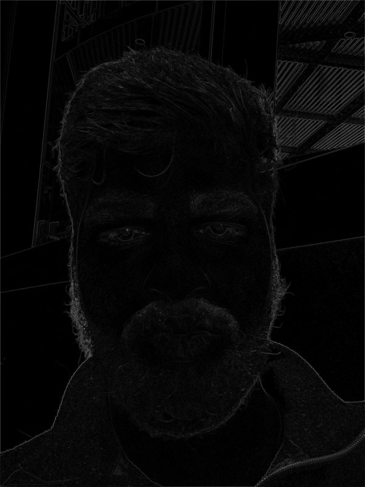
scipy.signal.convolve2d
9x9 box filter
Custom (numpy)
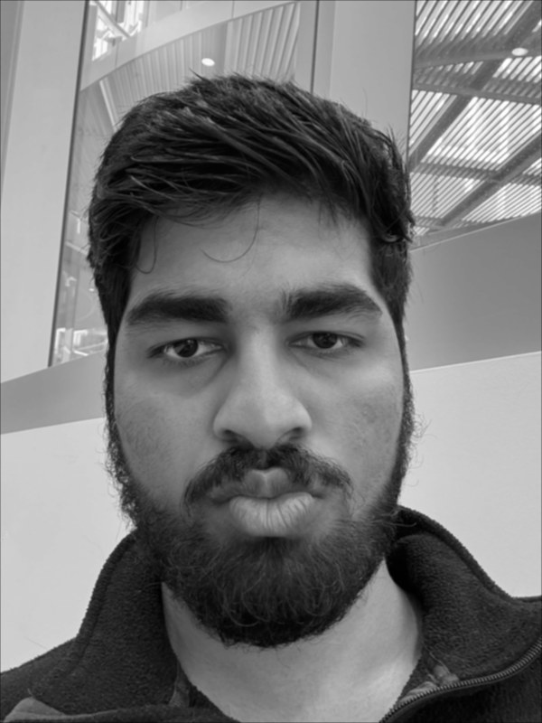
scipy.signal.convolve2d
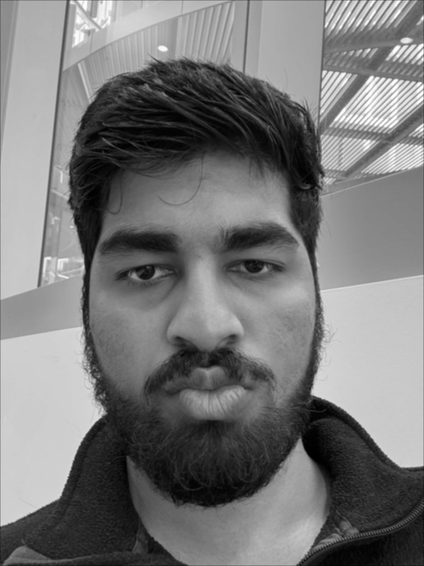
I implemented two versions of convolution with NumPy alone. The first involves four nested loops to calculate each output element. The input image gets zero padded by half the kernel size on each side and the kernel gets flipped, turning the computation into an actual convolution instead of correlation. Then, the kernel gets multiplied against each patch of the image in the same manner and summed to generate each output pixel.
The second implementation is essentially identical to the first. But it substitutes two inner loops for a dot product calculation with NumPy. Specifically, it flattens both the patch of the image and kernel and multiplies the resulting vectors.
To test the correctness of these approaches, I convolved my grayscale selfie using Dx=(1,0,−1) and Dy=DxT finite difference operators, as well as a 9×9 box filter kernel. Then I compared the convolution results against scipy.signal.convolve2d with mode=same. As expected, all three calculations yielded identical numerical results, with discrepancies smaller than 10−13, which amount to rounding errors. Their visualization is visually indistinguishable too.
There is a noticeable performance gap, however. The four-loop implementation finished convolution of the cropped portion with the 9×9 kernel in 1.87 seconds, while the two-loop approach required 0.125 seconds and scipy only 0.011 seconds. Scaling these numbers linearly to the whole image suggests timings of 110 seconds, 7 seconds, and under a second respectively. Such drastic speedup with the former version comes due to the fact that NumPy implements multiplication and summation operations in compiled C-code rather than interpreted Python. The latter achieves better efficiency by running the entire convolution internally in compiled code instead of Python loops. Yet with small kernels of size 1×3, the computational cost of the two-loop approach becomes comparable to that of the four-loop approach rather than scipy, since the number of multiplications and sums decreases drastically.
Both implementations use zero padding by default. This padding type matches scipy's default boundary='fill' mode with a fillvalue of zero. This choice produces consistent behavior between my implementations and scipy. Zero-padding assumes that pixels outside the image boundary are completely black. As a consequence, my implementations detect spurious edges along the perimeter of the original picture. While scipy also generates artifacts at the boundaries, it offers other fill options that avoid zero artifacts altogether.
Finite Difference Operator
Partial derivatives and gradient magnitude
Original
Gradient magnitude
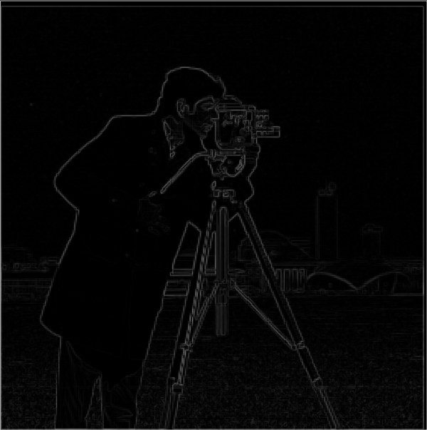
Partial derivative in x
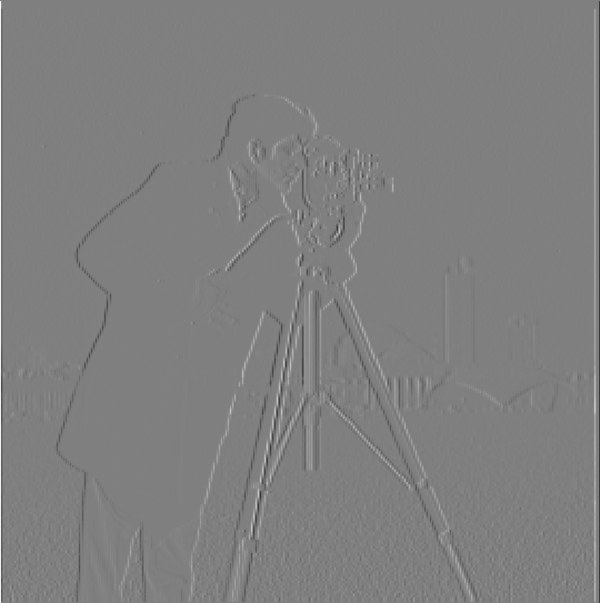
Partial derivative in y
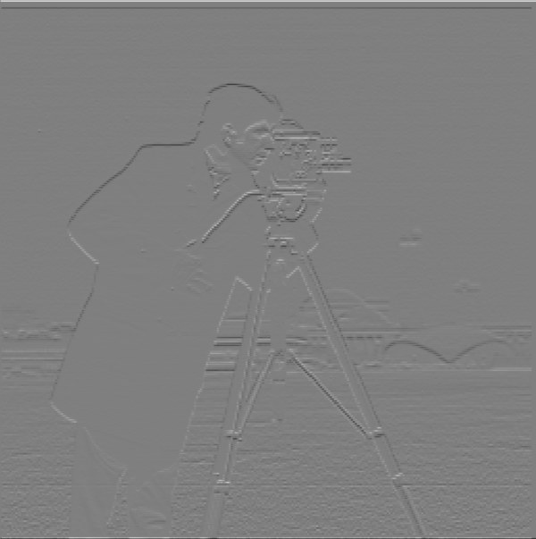
Binarized edges
Threshold 30
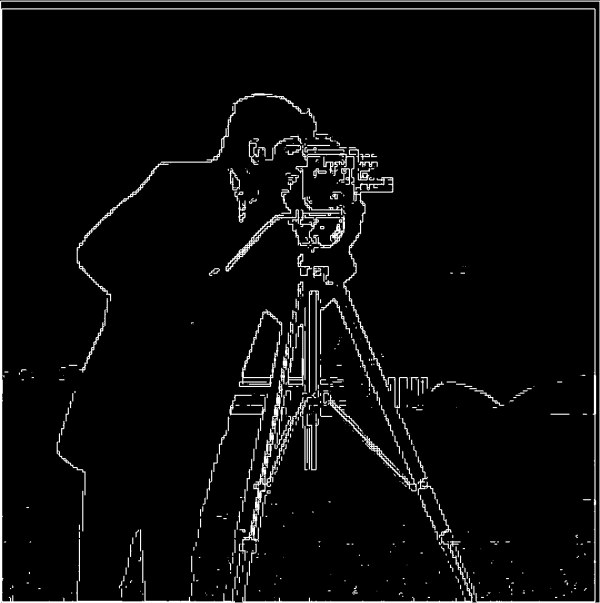
Threshold 40 (chosen)
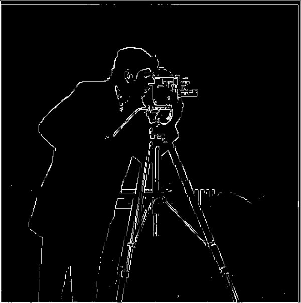
Threshold 50
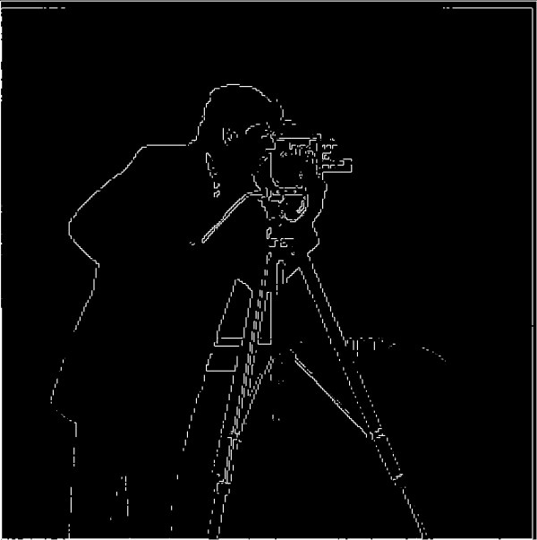
As part of the finite difference operator assignment, I estimated the gradients of my grayscale cameraman image using convolution with Dx=(1,0,−1) and Dy=DxT.
I visualized the gradient image by shifting and scaling each component to span a range centered around zero, assigning negative values darker tones. Then I calculated the magnitude of the gradient vector field as
√(Dx2 + Dy2)
This result was further rescaled so that the highest magnitude corresponds to the maximum pixel intensity, which ensures that the strongest edge appears white.
From the above image, the next step is generating an edge binary map. This process entails identifying each pixel whose gradient magnitude exceeds the chosen threshold and coloring it as white. Otherwise, each pixel will receive black color. I tested five thresholds 30, 35, 40, 45, and 50 and concluded that 40 provided a good compromise. The resulting edges retain outline contours of the man, camera, and tripod while eliminating most of the grass noise. At 50, the grass looks neater. Some portions of the legs of tripod and the outline of the man's coat, however, get lost.
At threshold 40, there is one notable drawback. Though most grass noise gets eliminated, low contrast background elements such as the buildings behind the trees fade from the image.
Another disadvantage of my implementation concerns visualization of the edge image itself. Since I used zero padding, it assumed that there is an infinitely long black line at the image edge. This assumption caused the detection of fake edges along the image borders.
Derivative of Gaussian (DoG) Filter
Filters
Blur, then finite difference
Gaussian blurred
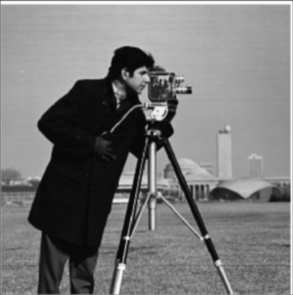
Gradient magnitude
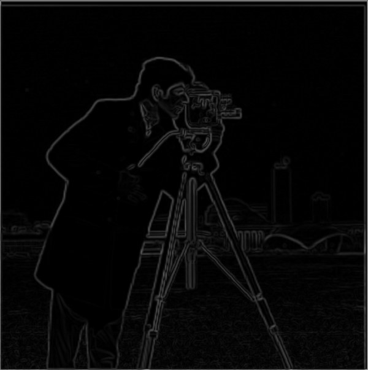
Edges (threshold 40)
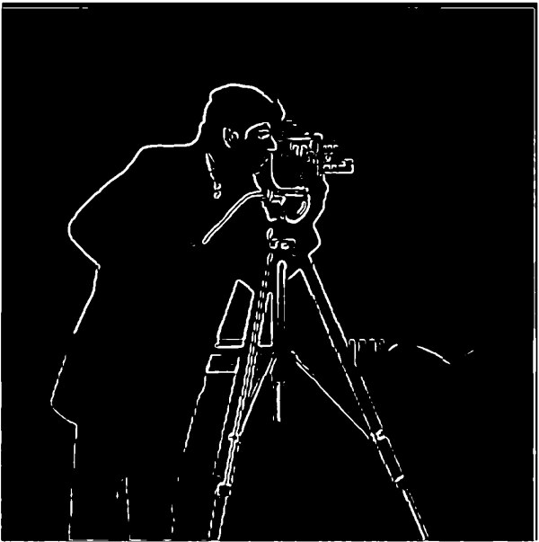
Single DoG convolution
Gradient magnitude
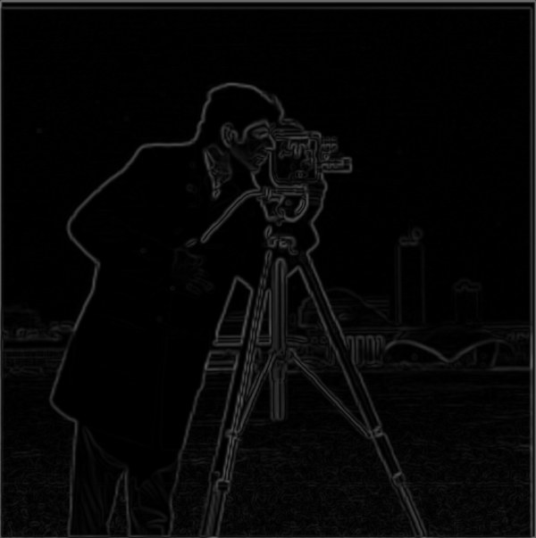
Edges (threshold 40)
Finite difference vs Gaussian smoothing
Finite difference only
With Gaussian smoothing
I built a 2D Gaussian function by calculating the outer product of two copies of the 1D Gaussian obtained with cv2.getGaussianKernel. The Gaussian used σ=2 and had a 13×13 kernel. A window of size roughly 6σ covers almost the entire useful part of the Gaussian weighting distribution.
Firstly, I blurred the cameraman image with the Gaussian and applied finite difference gradient estimation as specified in Part 1.2. The edges became noticeably thicker, smoother, and continuous. Moreover, unlike the previous attempt, my implementation connected the outlines of the coat and tripod legs rather than cutting them. Also, most grass noise got filtered out by virtue of averaging out high frequency variations of pixel intensities prior to differentiation.
One important disadvantage is that many low-contrast details disappeared. The background buildings became less visible, and edges got smeared into several pixels in width instead of appearing highly localized.
Since convolution operation is associative, convolution of the Gaussian-blurred image with finite difference operators should be equivalent to application of a single derivative of Gaussian (DoG) to the original image. To find those filters, I performed full-mode convolution of the Gaussian with Dx and Dy.
These filters have a size of 13×15 and 15×13 pixels respectively. They each feature a peak adjacent to a trough in one direction, resembling finite differences. I plotted the two kernels, enlarging them so that each filter element appears as a visible block of pixels. Middle-gray indicates zero filter response.
When applying these filters directly to the cameraman image, the outcome almost perfectly matches the gradient of the pre-blurred version. There is a subtle discrepancy, however, in a narrow strip near the edges due to different padding behavior of the two processes. Here, I adjusted the magnitude scales of the two gradient estimates to match and chose the same threshold 40.
Image Sharpening
Taj Mahal
Original

Blurred
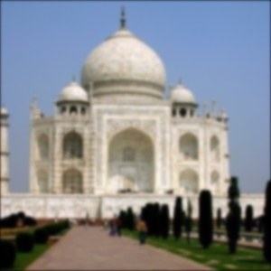
High frequencies
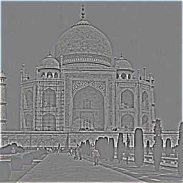
Sharpened (α = 1)
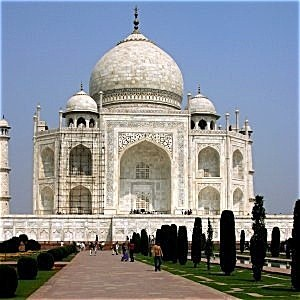
Varying the sharpening amount
Original
α = 0.5
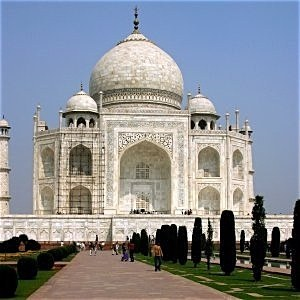
α = 1
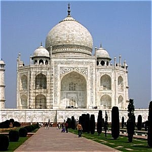
α = 2
α = 4
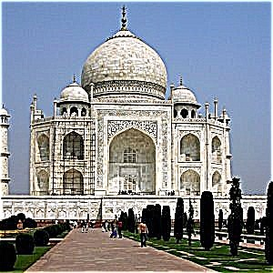
Selfie
Original
Blurred
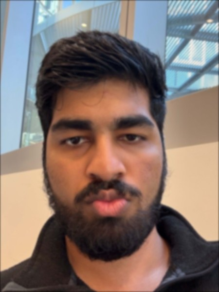
High frequencies
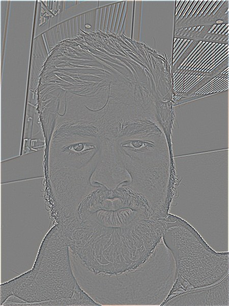
Sharpened (α = 2)
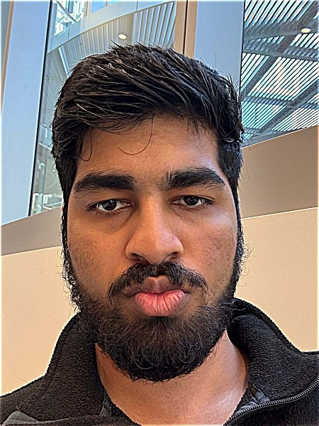
Evaluation: blur a sharp image, then sharpen it
Original
Blurred
Resharpened (α = 2)
Unsharp masking can be seen as separating high- and low-frequency contents of an image. The Gaussian filter operates as a low-pass filter retaining large-scale features. Thus, subtraction of the filtered image from the input image isolates the remaining high-frequency components, namely edges, texture, and fine-scale details. Addition of such a high-pass image to the input amplifies those elements and sharpens the overall image.
Alternatively, the operation may be represented as a single convolution. If the input image is denoted by f, the unit impulse e, and the Gaussian kernel g, then
f + α(f − f ∗ g) = f ∗ e + α(f ∗ e − f ∗ g) = f ∗ ((1 + α)e − αg)
Thus, the unsharp-mask operator equals (1 + α)e − αg. I verified my implementation against separate applications of Gaussian blur, high-pass filtering via subtraction of blur, and addition to the original image using convolution.
To perform unsharp masking on colored images, I used 9×9 Gaussian filter kernel with σ=1.5. Then I clipped the output back to the range 0-255.
The high-frequency components, however, contain negative values, which would get clipped if the image were converted back to the range 0-255 too early. Therefore, I kept all intermediate values in floating point, and in order to visualize the high-frequency images, I shifted them so that zero appears as middle gray. The contrast of the results is amplified artificially for demonstration purposes.
Adjustment of α reveals the effect of increasingly stronger sharpening. With α=0.5 and α=1, high-frequency features of the buildings, such as carved domes, arches, and tree leaves, become evident without looking heavily modified. At α=2, the effect of sharpening becomes obvious. At α=4, however, prominent bright halos emerge next to some prominent high-frequency components, including the minaret domes and tree tops. Moreover, low-frequency components of the sky and road surface show graininess due to amplification of high-frequency noise.
In the case of my selfie, the choice of optimal parameter seems to be α=2. Such sharpening highlights hair, beard, eyes, and window frames. It amplifies facial texture and causes slight bright halos where the hair meets the wall.
To check the effect of sharpening further, I applied unsharp masking to a blurred version of the cameraman image with α=2. Comparing root mean squared error between each pixel and original, blurring caused by a Gaussian filter with σ=1.5 resulted in an error of 7.95 while subsequent sharpening reduced the number to 5.16. The major edges, such as the coat, tripod, and camera, became noticeably crisper after sharpening.
There is one crucial limitation of unsharp masking, nevertheless. It can only amplify existing edges and features, but not recover lost high-frequency information from a blurred image. Indeed, the fine grass texture and background building details that got erased in previous blur remain absent in the result of sharpening.
Hybrid Images
Favorite: Selfie + Lion (full process)
Original (low frequency)
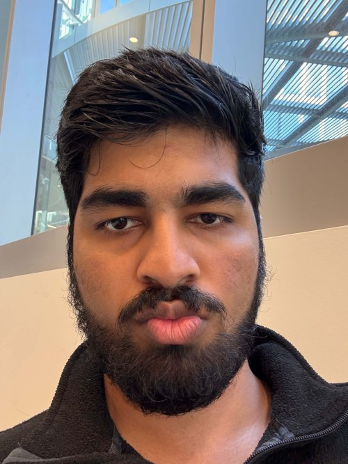
Original (high frequency)
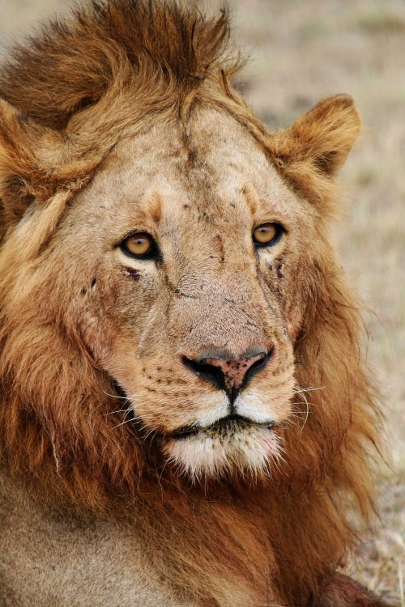
Aligned selfie
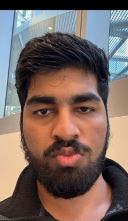
Aligned lion
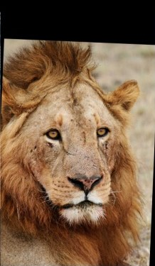
Low pass (σ = 12)
High pass (σ = 4)
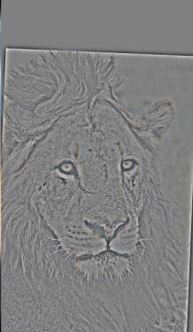
Hybrid
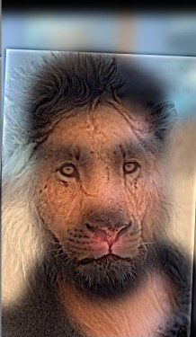
FFT selfie
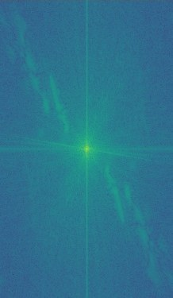
FFT lion
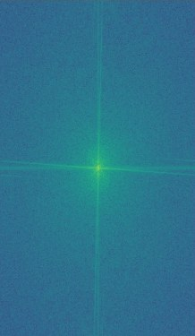
FFT low pass
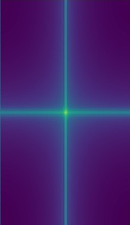
FFT high pass
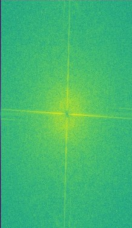
FFT hybrid
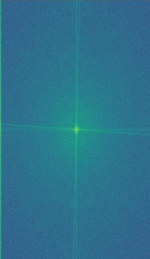
Hybrid at decreasing sizes (simulating distance)
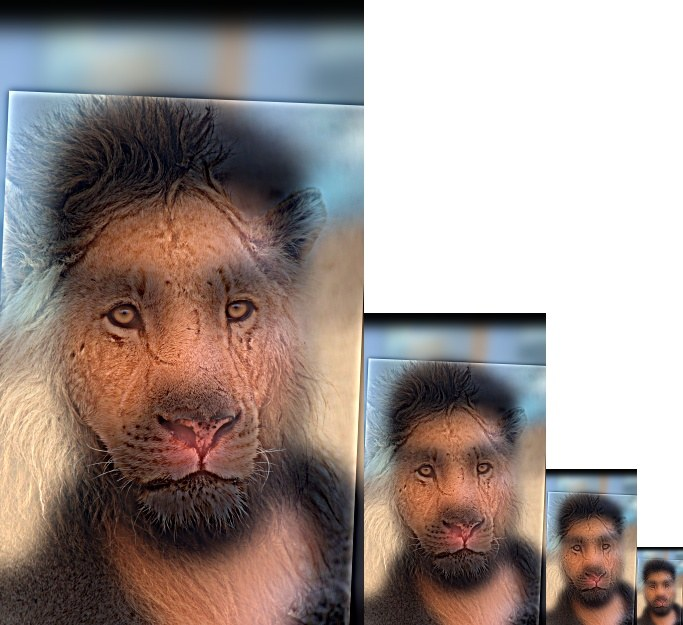
Derek + Nutmeg
Derek (low frequency)
Nutmeg (high frequency)
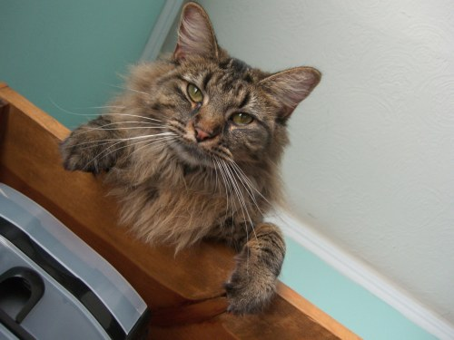
Hybrid
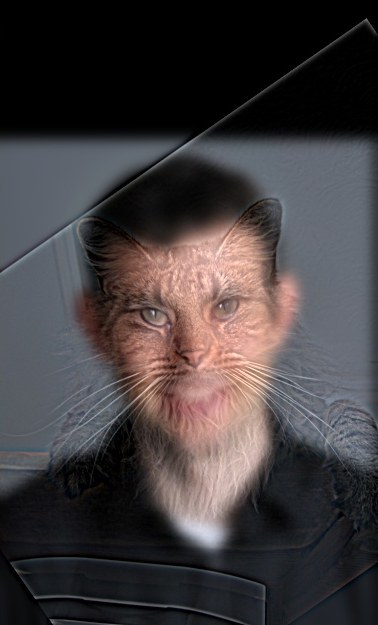
Hybrid at decreasing sizes
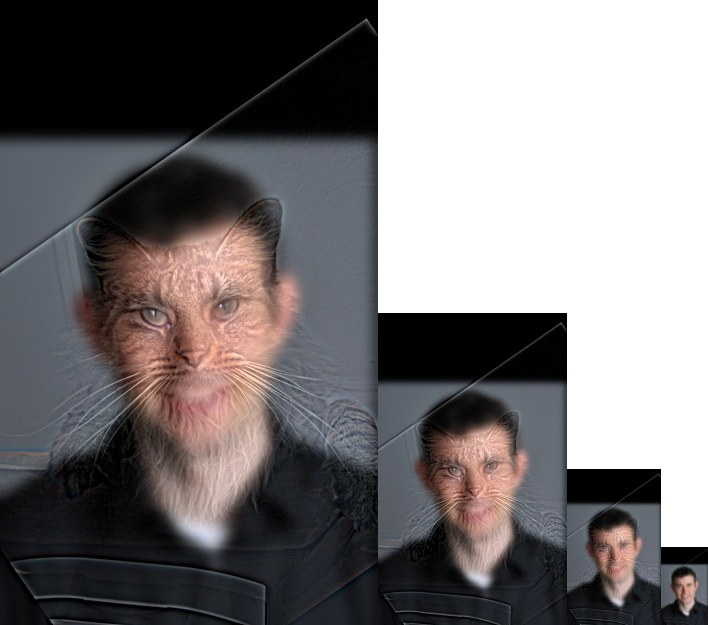
Lion + Tiger
Lion (low frequency)
Tiger (high frequency)
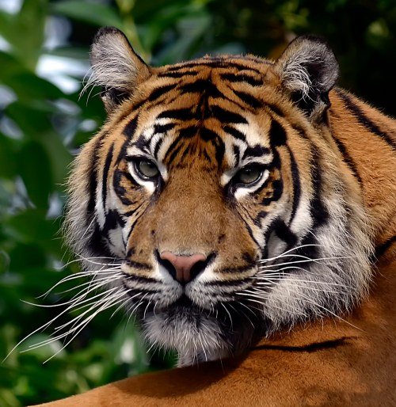
Hybrid
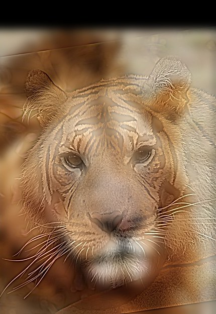
Hybrid at decreasing sizes
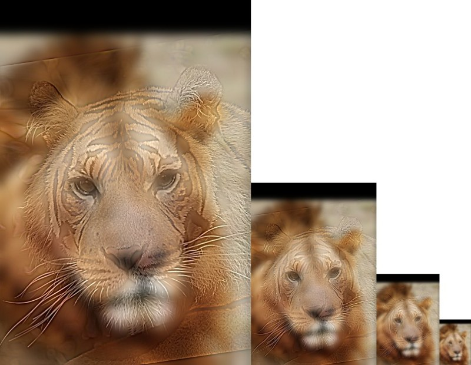
Hybrid images rely on perception of high spatial frequencies at close distances versus low frequencies from afar.
I employed the code provided to align faces in pairs of images. Firstly, I clicked on both pairs of eyes in the images and transformed one to match the face orientation. Then I applied low-pass Gaussian filter to one of the faces and generated a complementary high-pass version of another one. Their addition yields a hybrid.
Of the various combinations of hybrid images, I particularly like the selfie vs lion hybrid. It clearly shows how low and high frequencies interact. Namely, the Fourier transform reveals distinct frequency distributions. The low-pass face occupies primarily central frequencies. High-pass filter cuts out frequencies around the origin, leaving mostly high frequencies.
Horizontal and vertical lines observable in Fourier spectra represent the image boundary artifacts due to circular convolution properties.
I experimented extensively with the parameters before finding the best settings. In my case, the selfie received a low-pass filter with σ=12. Meanwhile, the lion image was high-passed using σ=4. Approximately speaking, this choice of σ corresponds to cutoff frequencies of 1/(2πσ) and amounts to 0.013 and 0.04 cycles per pixel for selfie and lion images respectively. A lower value of σ in the case of the selfie preserves too many facial features that compete with the lion appearance in close proximity. An excessively large σ would turn the selfie image into featureless blobs. For the lion image, σ=4 maintains essential details such as the whiskers, fur, and eye contours.
For the Derek and Nutmeg hybrid, I used σ=(6,3). Here, the face alignment caused Derek's face to be relatively small compared to Nutmeg, so greater blurring would render him invisible.
In the last example, σ=(8,2). A higher σ in the case of tiger caused it to maintain larger scale stripes rather than fine details only. In other words, σ=2 retained mostly stripe boundaries and whisker features, whereas the lion preserved mainly low-frequency patterns.
I notice black triangles along the boundary lines of hybrids after alignment, which arise because of rotations applied for alignment and zero padding thereafter.
Gaussian and Laplacian Stacks
Apple stacks (Gaussian top, Laplacian bottom)
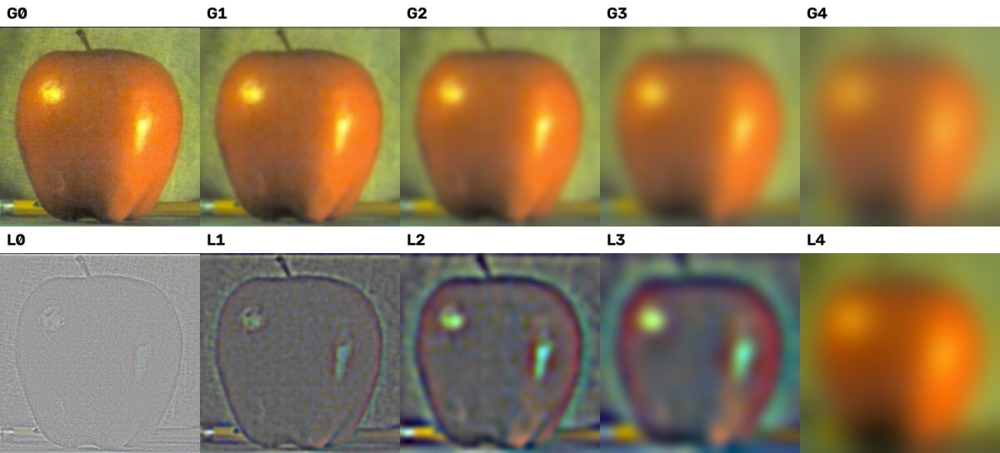
Orange stacks (Gaussian top, Laplacian bottom)
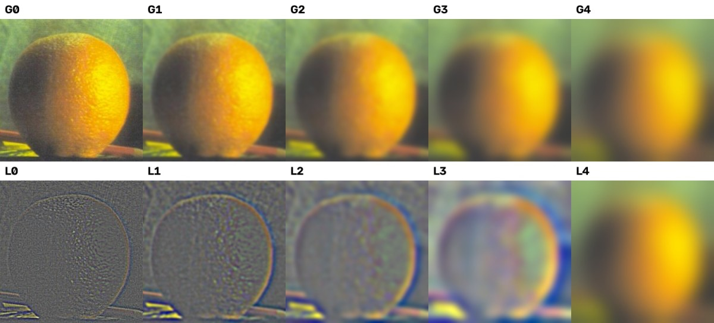
Recreating Figure 3.42 (a) through (l)
(a) Apple, level 0
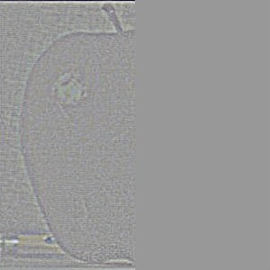
(b) Orange, level 0
(c) Blend, level 0
(d) Apple, level 2
(e) Orange, level 2
(f) Blend, level 2
(g) Apple, level 4
(h) Orange, level 4
(i) Blend, level 4
(j) Apple, collapsed
(k) Orange, collapsed
(l) Oraple
I implemented Laplacian and Gaussian stacks. A stack, unlike a pyramid, does not reduce the resolution of images at each level. As a consequence, each image remains of original dimensions.
For Gaussian stacks, I iteratively convolved the image with increasingly broad Gaussian filter kernels. Specifically, I applied the Gaussians with sigmas 2, 4, 8, and 16. Effectively, this means progressively removing high frequencies from the original image.
A Laplacian difference between any two successive images constitutes one band of spatial frequencies. Finally, I verified numerically that their sum reconstructs the initial image to within approximately 10−14.
Following example 3.42 from the book, I calculated masked Gaussian and Laplacian stacks. In this example, the mask has a constant step value of 1 on the left side and 0 on the right. The other images are simply the apple and orange.
This figure displays levels 0, 2, and 4 of masked images and their sum, the result after adding all masked Laplacian levels.
Indeed, high frequency mask produces distinct edges between apple/orange, whereas lower frequency levels blend smoothly along the boundary.
To prepare visualization, I re-normalized the laplacian differences into the range 0 to 255 because each image contained positive and negative values.
Multiresolution Blending
Oraple (vertical seam)
Apple
Orange
Oraple
Liger (vertical seam)
Lion
Tiger
Liger
Tiger eyes (irregular mask)
Tiger
Selfie
Mask
Blend
Favorite: Selfie in a lion's mane (irregular mask)
Selfie
Lion
Mask
Blend
Laplacian stack of the favorite (as in Figure 10)
Selfie, level 0
Lion, level 0
Blend, level 0
Selfie, level 2
Lion, level 2
Blend, level 2
Selfie, level 4
Lion, level 4
Blend, level 4
Masked selfie
Masked lion
Final blend
To implement multiresolution blending, I employed a Gaussian stack of mask and Laplacian stacks of two images being combined. For the algorithm, I employed the stack-based version described on p. 230. It avoids intermediate steps of downsampling and upsampling of the images.
At each level of resolution, I calculated weighted sum of Laplacian components.
Mi LA,i + (1 − Mi) LB,i
where Mi represents a gaussian-blurred mask image at the i-th level of resolution.
Summing weighted Laplacian components reconstructs the final image. I created six levels of resolution starting with sigma 2. For my personal image pairs, I prealigned images using point-selection code provided by the course staff.
I applied a vertical step mask separating my lion and tiger photos into halves. Multiresolution blending greatly softened edges between lion's and tiger's faces around the nose. While high-frequency components of the image show rapid transition of texture, low frequency elements transition smoothly over a wide region.
Additionally, I experimented with custom-shaped masks to blend specific regions. For instance, I wanted to blend my eye region with tiger's eyes. Thus, the mask consisted of two small ellipses. Another example included face-blending where I placed my face inside the face and mane of a lion. This task involved a large ellipse.
Visual inspection of Laplacian differences of face-and-manes example revealed the behavior of multiresolution blending algorithm. High-frequency level 0 mask is still sharp, so fine features such as beard hair and fur textures transition abruptly along a few pixels around the mask edge. Coarse features such as skin tone and fur colors gradually vary across the whole mask region in levels 4.